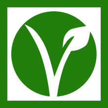
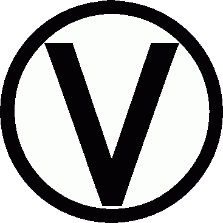

A pesar de todas las creencias, el veganismo NO es una dieta. Es una postura ética. Este busca rechazar la explotación de los anymales y el consumo de los productos derivados de estos. El veganismo es por y para los anymales
Para poder hablar de veganismo, también debemos hablar de especismo. El especismo es el hecho de creer que el ser humano es superior al resto de los anymales, y por ello los puede usar en beneficio propio. Por ejemplo, usar filtros de anymales es especista ya que los ves como algo que se puede usar como 'aesthetic'
Existen muchos mitos sobre el veganismo, y a continuación explicaré 3:
1. "El veganismo es caro": Comer vegano no significa comprar productos procesados que se parezcan a la carne, o sustitutos 'gourmet' de productos derivados. La base de una alimentación vegana son las frutas, verduras, legumbres, cereales y semillas; no es neceario comprar leches vegetales caras o carnes vegan procesadas.
2. "Deficiencia de nutrientes y/o proteínas": Comencemos aclarando que, ser vegano no es sinónimo de estar sano. Ahora, también debemos notificar que, las personas que consumen carne, consumen el doble del aporte proteico que en realidad necesitan; por tanto, un vegano que mantenga una dieta balanceada, contará con un porcentaje proteico diario más adecuado. Hablando del calcio, que siempre se ha dicho se obtiene de la leche de vaca, actualmente tenemos muchas más opciones en el mercado que aportan este mismo mineral, además de múltiples vegetales que poseen calcio.
3. "Las personas gestantes no pueden ser veganas": Una dieta vegana bien llevada es perfectamente segura para el embarazo, además, puede aportar beneficios concretos, como disminuir el riesgo de preeclampsia (complicación del embarazo caracterizada por una presión arterial alta) y de diabetes gestacional. Todas las personas gestantes, incluyendo las veganas, necesitan empezar a tomar un suplemento de 400 microgramos de ácido fólico al día, 2-3 meses antes de quedarse embarazadas, y continuar durante al menos, los primeros 3 meses de embarazo. Lo mejor es siempre consultar con un nutricionista experto, que ayude a llevar correctamente la dieta, y la falta de vitamina B12.
Toda esta información fue tomada de la cuenta de TikTok @miffi_ecofem